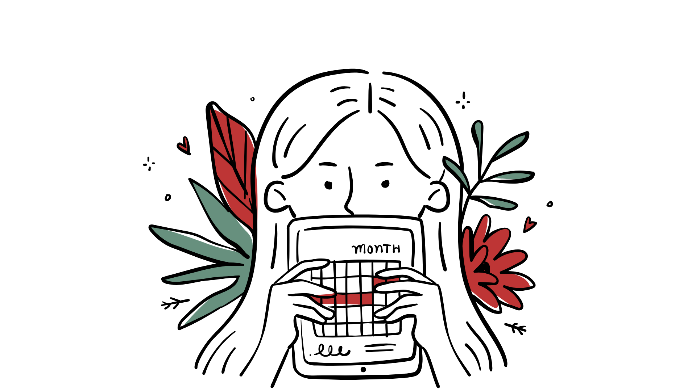

A menstruação, uma experiência comum para cerca de metade da população mundial, ainda é frequentemente invisibilizada nos contextos educacionais.
Por meio deste projeto indissociável, vinculado ao NEPGS e PRISMA pretendemos quebrar essa barreira que impossibilita ter acesso a uma educação acessível para todos.
Os objetivos do projeto são:
Analisar os impactos gerais da menstruação nos discentes do campus
Distribuir absorventes no câmpus
Produzir material educativo sobre menstruação
Investigar os sintomas dos discentes durante o período menstrual
Somos uma equipe composta por quatro pessoas, vamos conhecer um pouco:
Lucía: Professora de inglês dos cursos técnicos integrados e do TADS, coordenadora do NEPGS e do projeto.
Nicollye: Estudante do segundo ano do técnico integrado Informática para Internet, membro do NEPGS e bolsista do projeto.
Cristina: Professora de biologia dos cursos técnicos integrados ao ensino médio, co-coordenadora do NEPGS e do projeto.
Annanda: Assistente social do câmpus Rio Grande, membro do NEPGS e co-coordenadora do projeto.
